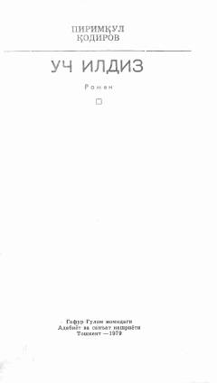

UIInsoniy munosabatlar va talabalar hayotidan hikoya qiluvchi mashhur o'zbek romani.
Pirimqul Qodirovning ushbu mashhur romanida talabalar hayoti, insoniy munosabatlar, muhabbat va ma'naviy-axloqiy masalalar yoritilgan. Asar qahramonlarining ichki kechinmalari va hayotiy sinovlari orqali chuqur falsafiy fikrlar ochib beriladi.